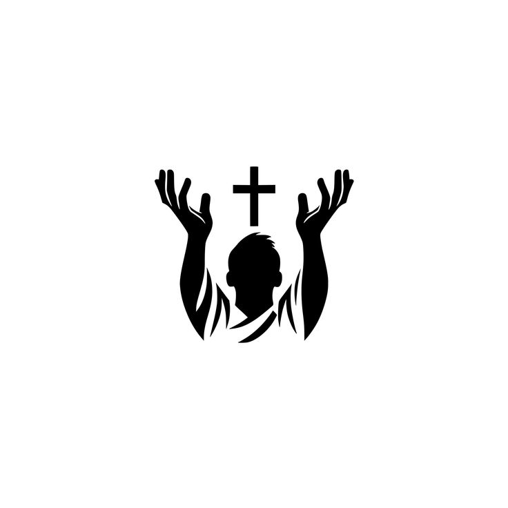
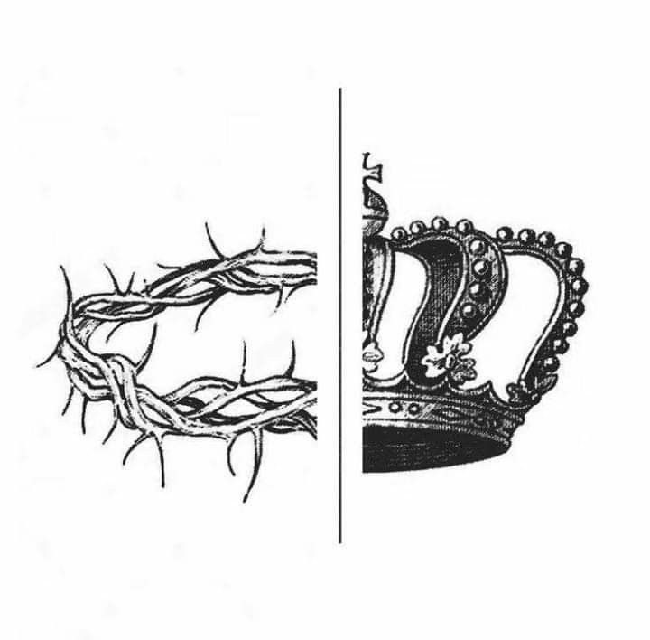

Bienvenue à Kingdom of Heaven Church,une maison spirituelle ou le ciel touche la terre. ici,chaque âme est accueillie avec amour ,chaque coeur est invité à rencontrer Dieu,et chaque vie peut être transformée par la puissance du Royaume.
Notre Mission
est d'Etablir le Royaume de Dieu sur terre par l'amour,la vérité et la puissance du Saint-Esprit.Nos Valeurs
- la foi
- l'unité
- la service et la sainteté
Les Activités principales
- Cultes
- Enseignements
- Évangélisation
- Aide sociale
Ce que nous croyons

Jésus-Christ est Seigneur
La Bible est la parole de Dieu

Le Salut est offert à tous

Le Royaume de Dieu est présent et à venir
Événements à venir
- Culte de Dimanche
- Conférence"Vivre le Royaume"
- Groupe de Prière du Mercredi
- Baptêmes mensuels
Temoignage
Le temoignage d'un Chrétien de l'église "Kingdom of Heaven Church" :
"Depuis que j'ai rejoint Kingdom of Heaven Church,ma vie a changée.j'ai trouvé une famille,une foi vivante,et une paix que je n'avais jamais connue."